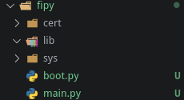
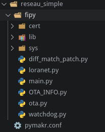
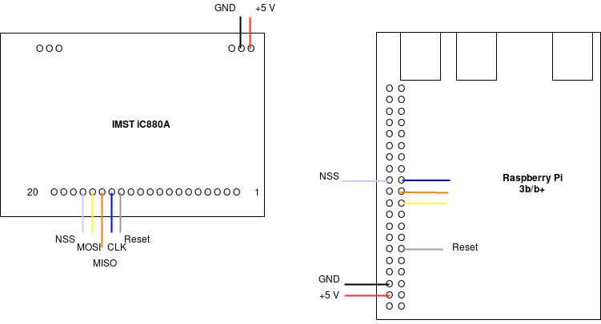

Mise en place d”un réseau LoRaWAN simple¶
Nous allons voir comment mettre en place un réseau LoRaWAN simplement entre une Raspberry Pi et une carte Fipy. Le noeud devra envoyer la valeur de température jusqu”au serveur d”application.
Matériel :¶
Carte Fipy
Carte Pysense
Raspberry Pi 3b / 3b+
Carte IMST iC880A
Mise en place du noeud / carte Fipy¶
Dans un premier temps, installer dans Visual Studio Code ou Atom et le plugin Pymakr
Ensuite il va falloir mettre à jour le Firmware de la carte d”extension pysense, vous pouvez trouver la procédure ici
Après la mise à jour, débranchez la carte Pysense de l”USB
Mettre la carte Fipy sur la carte Pysense, il faut que le bouton reset de la carte Fipy soit du coté du port USB de la carte Pysense
Mise à jour de la carte Fipy :
Avant de commencer, il est recommandé d”installer la mise à jour de la carte Fipy. Vous pouvez trouver les informations d”installation pour Windows / Mac OS / Linux à cette adresse. Nous utiliserons une distribution Linux.
Installez les paquets dialog et python-pyserial
Télechargez le logiciel de mise à jour ici
Télechargez la dernière version du firmware de la carte Fipy à cette adresse
Après avoir extrait le logiciel de mise à jour, allez dans pycom_firmware_update_1.16.1-amd64/pyupgrade
Branchez à l”ordinateur la carte Pysense avec la carte Fipy installée dessus.
Executez la commande pour connaitre le port sur lequel est branché la carte :
./pycom-fwtool-cli list
Pour écrire la mise-à-jour dans la carte Fipy, entrez la commande suivante :
sudo ./pycom-fwtool-cli -p /dev/ttyACM1 flash -t ../../FiPy-1.20.0.rc13.tar.gz
Dans notre cas, la version du firmware est 1.20.0 et le port /dev/ttyACM1
Programmation du noeud¶
Ouvrez Visual Studio Code ou Atom. Créez un dossier pour le projet, nous l”appellerons reseau_simple.
Créez un fichier de configuration pour le noeud. Cliquez sur All commands en bas de l”écran, puis dans le menu déroulant qui s”affiche, séléctionnez Project Settings
Créez un sous-dossier pour y écrire le programme du noeud. Nous l”avons appelé Fipy
Dans le fichier JSON créé précedement, ajoutez le nom de ce dossier :
"sync_folder": "fipy",
Créez les dossiers et fichiers suivants dans ce dossier :
boot.py permet d”exécuter du code uniquement au démarrage de la carte
main.py permet d”exécuter du code pendant que la carte est allumée
cert contient les certificats
lib contient des bibliothèques

Programmation du noeud à partir d”exemples¶
Dans notre cas nous allons baser notre programme sur un exemple que vous pouvez trouver sur github à cette adresse.
Dans un premier temps téléchargez le repository. Ensuite copiez le contenu pycom-libraries/examples/OTA-lorawan/firmware/1.17.1/flash dans le dossier Fipy créé précédement.

Dans le fichier main.py, recopiez le code suivant.
#!/usr/bin/env python
#
# Copyright (c) 2019, Pycom Limited.
#
# This software is licensed under the GNU GPL version 3 or any
# later version, with permitted additional terms. For more information
# see the Pycom Licence v1.0 document supplied with this file, or
# available at https://www.pycom.io/opensource/licensing
#
from loranet import LoraNet
from ota import LoraOTA
from network import LoRa
import machine
import utime
def main():
print('Booting with firmware version 1.17.1')
LORA_FREQUENCY = 868100000
LORA_NODE_DR = 5
LORA_REGION = LoRa.EU868
LORA_DEVICE_CLASS = LoRa.CLASS_A
LORA_ACTIVATION = LoRa.OTAA
LORA_CRED = ('240ac4fffe0bf998', '948c87eff87f04508f64661220f71e3f', '5e6795a5c9abba017d05a2ffef6ba858')
lora = LoraNet(LORA_FREQUENCY, LORA_NODE_DR, LORA_REGION, LORA_DEVICE_CLASS, LORA_ACTIVATION, LORA_CRED)
lora.connect()
ota = LoraOTA(lora)
while True:
rx = lora.receive(256)
lora.send(bytes("Hello World", "utf-8"))
print("In while")
if rx:
print('Received user message: {}'.format(rx))
utime.sleep(60)
main()
#try:
# main()
#except Exception as e:
# print('Firmware exception: Reverting to old firmware')
# LoraOTA.revert()
Mise en place de la partie passerelle / network server / application server¶
Pour toute cette partie nous allons utiliser une carte Raspberry Pi 3b+ avec une carte d”extension IMST iC880A
Dans un premier temps, téléchargez l”image de lora-getway-os-full à l”adresse suivante.
Une fois téléchargée, il faut extraire l”archive.
Après cela vous devez écrire l”image extraite sur la carte SD de la Raspberry
Insérez la carte SD dans votre ordinateur
Repérez son point de montage à l”aide de la commande :
lsblkPuis, écrivez l”image sur la carte SD avec la commande suivante (en veillant à bien remplacer le chemin de l”image et le point de montage de la carte SD) :
sudo dd bs=4M if=lora-gateway-os-full-raspberrypi3--20190810092349.sdimg of=/dev/mmcblk0 conv=fsync
Mettez la carte SD dans la Raspberry et testez si celle-ci boot.
Attention ! Le clavier est en QWERTY.
Connectez-vous avec les identifiants suivants : Login = admin / Password = admin
Configuartion du WIFI¶
sudo gateway-config
Sélétionnez Configure WIFI puis ok et ok
enable wifi
scan wifi
services #Pour voir les réseaux disponibles
agent on
#Choisser un des reseaux dans la liste de service
# Exemple :
# MyNetwork wifi_dc85de828967_68756773616d_managed_psk
connect wifi_dc85de828967_68756773616d_managed_psk
#Entrer le mot de passe
quit
Configuration de la passerelle¶
Faites tout le câblage nécéssaire avant de brancher la Raspberry.

sudo gateway-config
# 2 setup LoRa concentrator shield
# 1 IMST - ic880A
# Entrer 17 si vous avez suivi notre cablage
# OK
# Ok
# Ok
# Ok
# Ok
Maintenant à chaque démarrage, l”OS va se connecter automatiquement à ce réseau wifi.
Paramétrage du serveur de réseau pour notre appareil¶
Connectez vous à l”inteface web. Pour y accéder ouvrez votre navigateur et entrez l”adresse IP de la Raspberry suivi de : 8080. Dans notre cas : http://192.168.43.134:8080 Les identifiants de connection sont les mêmes que pour vous identifer en ssh.
Création d”un network server¶
Allez dans l”onglet network-servers et cliquez sur add. Vous pouvez mettre comme nom ce que vous voulez, nous l”avons appelé Fipy_Serv. Pour Network-server server entrez : localhost:8000. Cliquer ensuite sur ADD NETWORK-SERVER
Création d”un Gateway-profile :¶
Name : Fipy_GW_profile
Enable channels : 0, 1, 2
Network Server : Fipy_Serv
Creation d”une Gateway :¶
Gateway Name : Fipy_GW
Gateway description : OTAA Fipy Gateway
Gateway ID : b2 1a d4 c0 7d c6 be f6
Network-server : Fipy_Serv
Gateway-profile : Fipy_GW_profile
Gateway discovery enabled : Autoriser
Création d”un service profile :¶
Service-profile name M1-CSSE
Network-Server Fipy_Serv
Add gateway metadata Autoiser
Création d”un Device-profile :¶
Device-profile name : Fipy_Hello_World
Network-Server : Fipy_Serv
Device-profiles/Create¶
Device-profile name : Fipy_dp
Network-server : Fipy_Serv
LoRaWAN MAC Version : 1.0.2
LoRaWAN MAC version supported by the device : B
Device-profiles/ota_dp¶
Device support OTAA : Autoriser
Application¶
Application name : Hello_World
Application description : Hello world App
Service-profile : M1 CSSE
Payload codec : None
Application / Hello_world / Create¶
Device name : Fipy
Device déscription : Fipy
Device EUI : 240ac4fffe0bf998
Device profile : Fipy_dp
Application / Hello_world / Devices / Fipy¶
Application key : 5e6795a5c9abba017d05a2ffef6ba858
Problèmes rencontrés¶
(Pymakr) « There was an error with your serialport module »¶
Ce problème apparait au démarrage de visual studio code après l”installation de Pymakr. Vous pouvez trouver des informations pour résoudre le problème ici.
Résolution du problème :¶
Dans le cadre de ce projet nous utilisons un fork de Visual Studio Code appelé code les noms de dossier sont suceptibles de changer en fonction du logiciel que vous utilisez.
Nous utilisons pour ce projet la distribution Linux Manjaro qui est basé sur Arch Linux le gestionnaire de paquet sera peut-être différent du votre
$ sudo pacman -Sy npm
$ npm install -g prebuild-install
$ cd ~/.vscode-oss/extensions/pycom.pymakr-1.1.3/
$ cd node_modules/@serialport/bindings
$ prebuild-install --runtime electron --target 4.2.5 --tag-prefix @serialport/bindings@ --verbose --force
Il faut ensuite relancer Visual Studio.
Sources:¶
Mise en place Fipy : https://docs.pycom.io/ ; https://docs.pycom.io/gettingstarted/connection/fipy/ ;
Mise en place Pymakr : https://docs.pycom.io/pymakr/installation/vscode/ ; https://docs.pycom.io/pymakr/toolsfeatures/
Programmation Noeud : https://docs.pycom.io/tutorials/lora/lorawan-otaa/ ;
LoRa Server pour Raspberry : https://www.loraserver.io/lora-gateway-os/install/raspberrypi/
Partie Passerelle Box LoRa : https://www.loraserver.io/guides/first-gateway-device/ ; https://docs.pycom.io/tutorials/all/ota-lorawan/